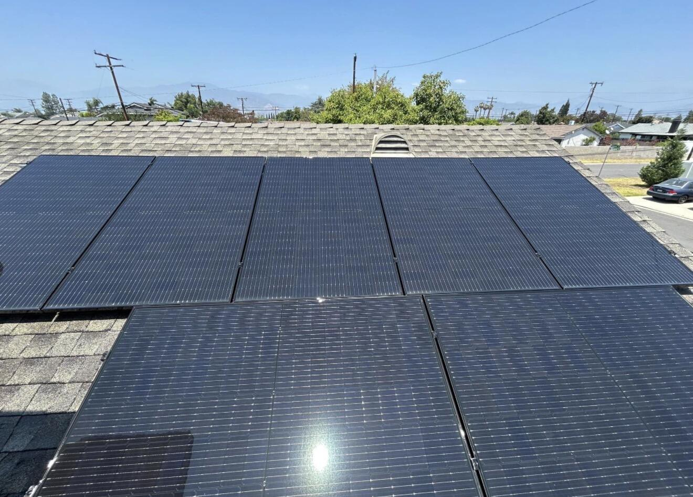

Infrastructure First
Start with tangible energy and infrastructure needs before adding digital layers or financial complexity.
TerraHash Energy is developing an integrated infrastructure platform centered on renewable power, storage, digital systems and operating intelligence.
TerraHash Energy is an early-stage energy infrastructure company focused on the convergence of renewable power, storage, digital infrastructure and data-driven operations.
Our approach begins with real-world assets and practical project development. We evaluate how energy, site conditions, infrastructure requirements and digital systems can work together as one coordinated platform.

Start with tangible energy and infrastructure needs before adding digital layers or financial complexity.
Evaluate reliability, power access, storage, interconnection and operating requirements with project-level discipline.
Use operating data, verification-ready records and clear reporting to improve visibility across the asset lifecycle.
Design projects, relationships and systems around durability, scalability and responsible capital allocation.
Renewable generation, storage and power strategy.
Sites, electrical systems and digital facilities.
Compute, connectivity and operational data layers.
Monitoring, analytics and decision support.
Identify sites, energy resources, infrastructure constraints and opportunities with strategic fit.
Advance power strategy, project diligence, engineering inputs and deployment planning.
Connect energy assets, digital infrastructure, operating data and monitoring into a coordinated system.
Expand through qualified project partners, technology relationships and disciplined capital deployment.

Evaluate site conditions, land, access, infrastructure constraints and development readiness.
Assess generation, storage, electrical systems and interconnection pathways around project requirements.
Coordinate technical diligence, system design and staged deployment with qualified providers.
Use monitoring and operating data to support maintenance, performance visibility and future expansion.
Developers, land stakeholders, utilities, operators and infrastructure specialists involved in project delivery.
Qualified equipment, engineering, software, data and digital infrastructure providers.
Investors and strategic capital relationships suited to responsible infrastructure development and growth.
TerraHash is focused on creating a practical, scalable platform where energy infrastructure, digital systems and operating intelligence reinforce one another.
BUILD WITH TERRAHASH →